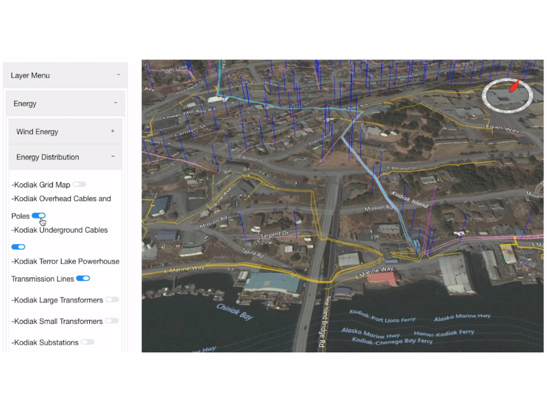
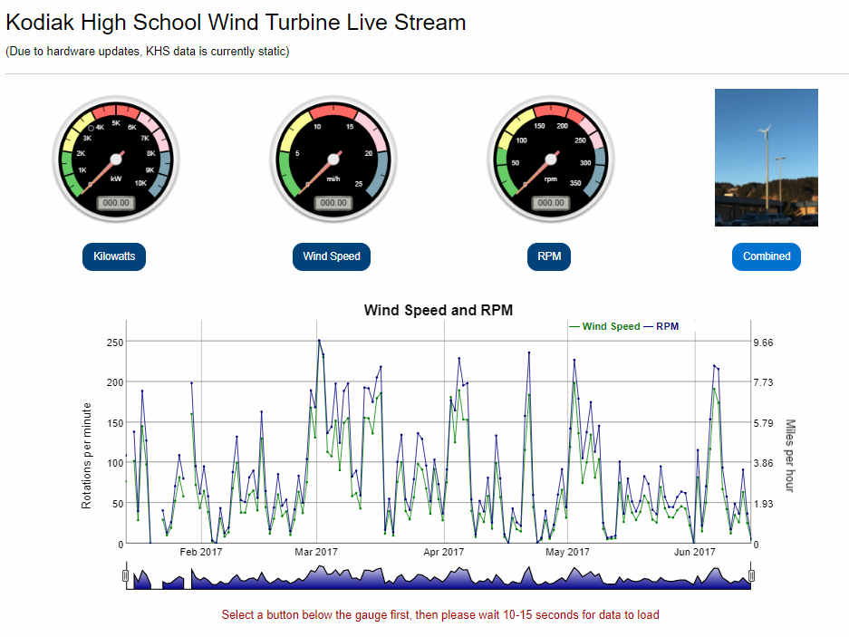
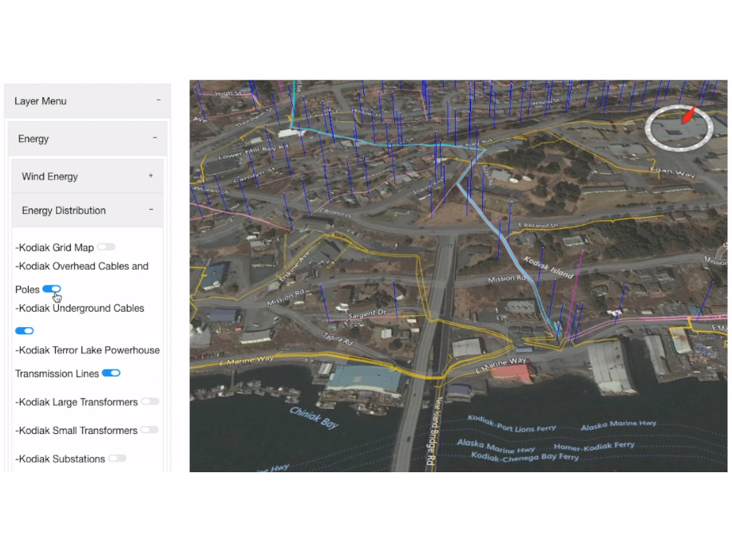
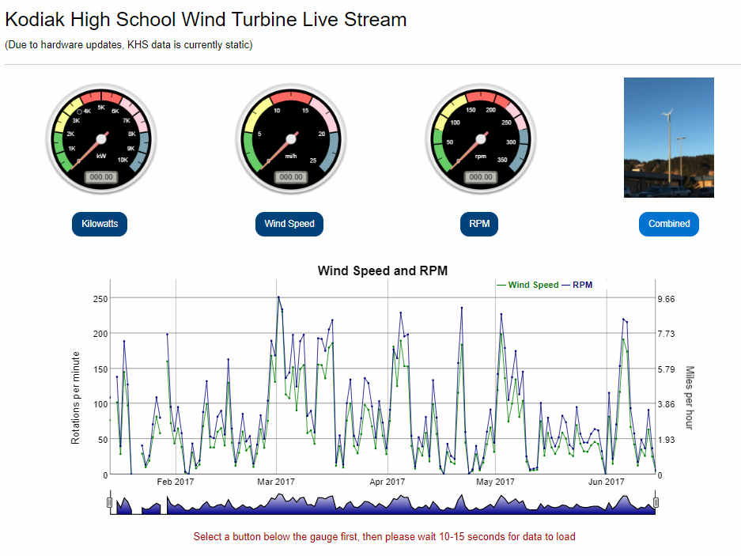

NASA Ames Research Center
Position: Programming Intern
- General Responsibilities:
- Program, document, and understand code using Python and JavaScript for primarily backend development
- Regularly use Linux servers to host websites, databases, and run command line scripts
- Create and/or sort geospatial data for project use
- Gather and save dynamic data for dynamic visualization
- Gather and save static data for static visualization
- Assist, collaborate, and communicate with other team members nearby or in New York
- Demo, present, and review feedback on application progress during meetings and conferences


 



While working as an intern for NASA Ames Research Center, I worked with Kiae Shin, students of Fei Tian Academy of the Arts, and Ronald Fortunado. Kiae was my main partner in the project and Ron was our supervisor. Ron also worked closely with Patrick Hogan, the NASA World Wind Program Manager, while supervising our work to ensure our project was up to his standards and giving us any feedback they discussed.
The focus of my job was to collaborate with others and create a web application called NASA CitySmart WorldWise. This project was submitted to the 2017 NASA Europa Challenge and can be better understood by clicking here or navigating to the project page on the left navigation bar. I was tasked with mostly back-end coding while working with JavaScript and Python.